Home
History
Media
Home
History
Media
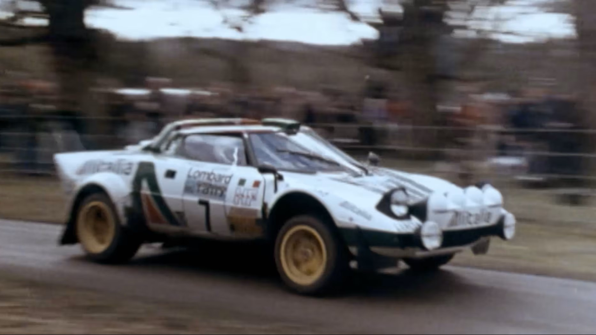
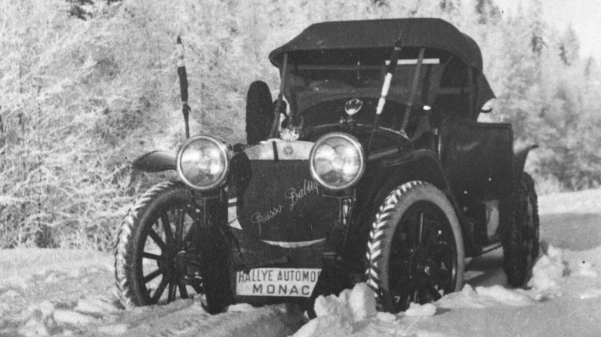
Group B was introduced by the FIA in 1982, with the aim of attracting more manufacturers to rallying through flexible rules and lower production requirements for homologation. Carmakers soon built increasingly specialized, lightweight, turbocharged and four-wheel-drive cars, including the Audi Quattro, Peugeot 205 Turbo 16 and Lancia Delta S4. The cars became spectacularly fast, but speed and growing performance outpaced safety measures on crowded stages. After fatal accidents at Rally Portugal and the Tour de Corse in 1986, the FIA banned Group B from the World Rally Championship starting in 1987.
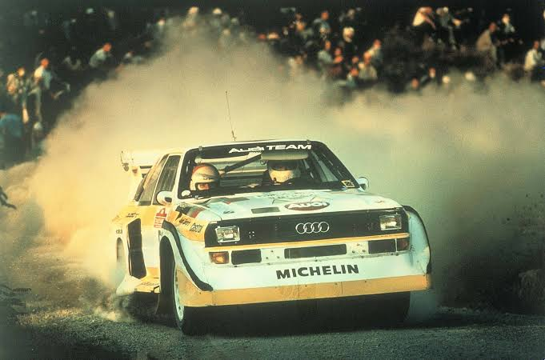 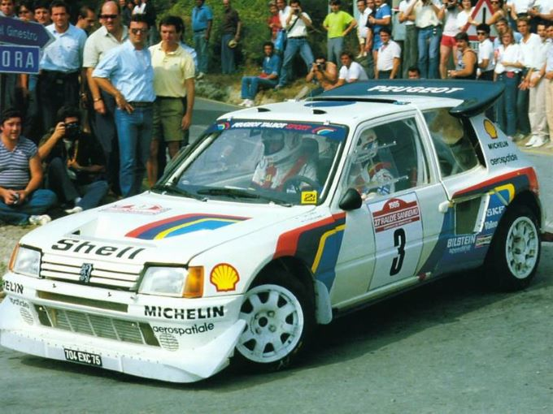 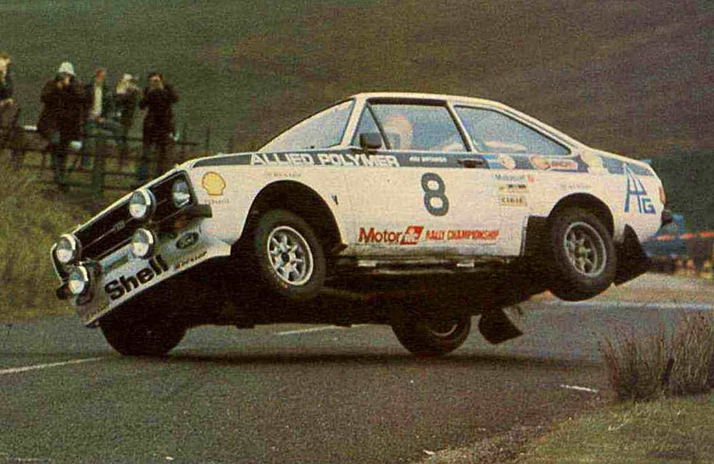
Group A took over as the World Rally Championship’s leading class in 1987, after Group B was banned. Its rules required competing cars to be closely based on production models, with limits on power, weight and aerodynamics—helping contain costs and making it easier for privateer teams to compete. Lancia’s Delta Integrale dominated the early years, while the Mitsubishi Lancer Evolution, Toyota Celica GT-Four, Subaru Impreza and Ford Escort Cosworth became defining cars of the era. Group A remained at the top through 1996, when a new generation of World Rally Cars took over.
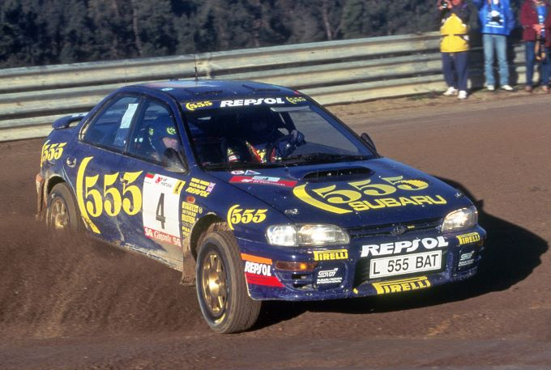 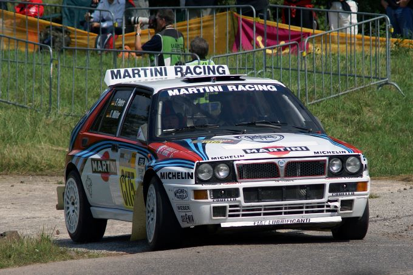 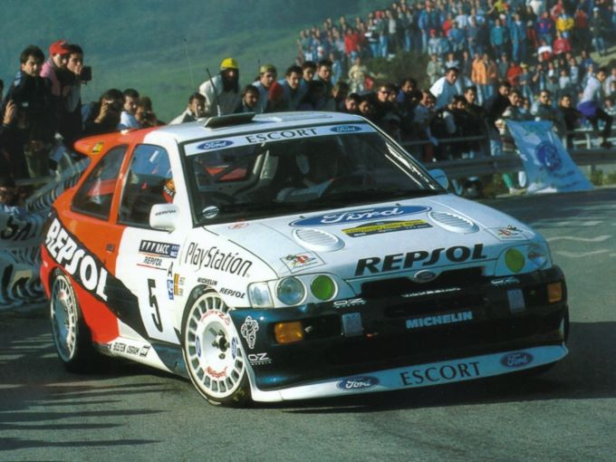 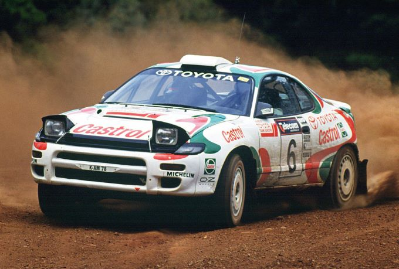 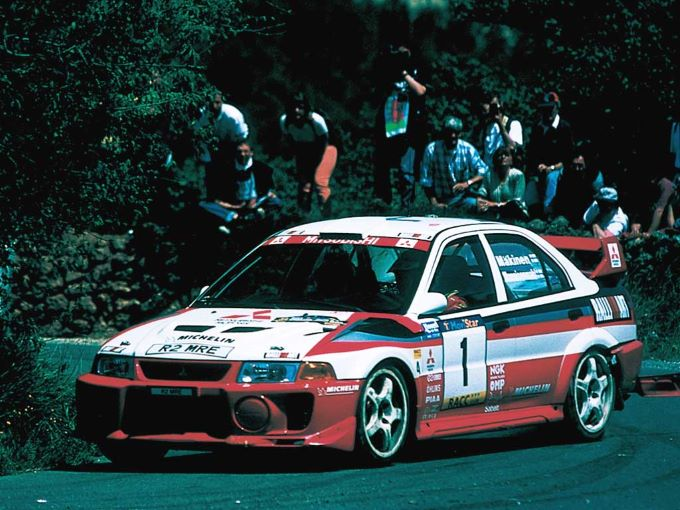
The World Rally Car era began in 1997, when new regulations replaced Group A and removed the need for manufacturers to mass-produce road versions of their competition cars. That opened the championship to more manufacturers, including Seat, Citroën, Peugeot and Hyundai. The period saw Mitsubishi continue to succeed with its Group A Lancer Evolution, while Peugeot, Subaru, Ford and Citroën all won major titles. Later, Sébastien Loeb and Citroën dominated, followed by Sébastien Ogier and Volkswagen, who took consecutive drivers’ and manufacturers’ titles from 2013 through 2016.
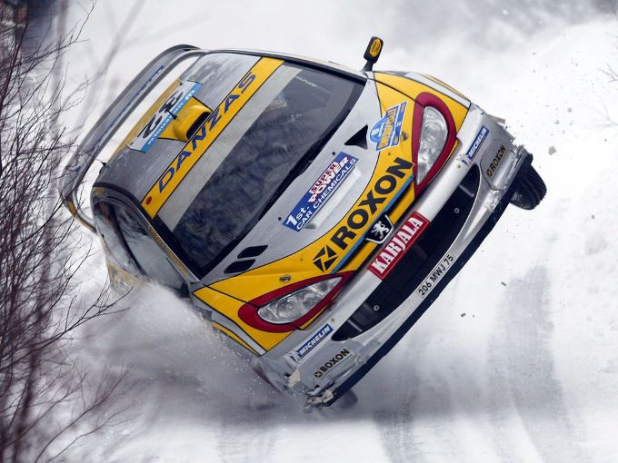 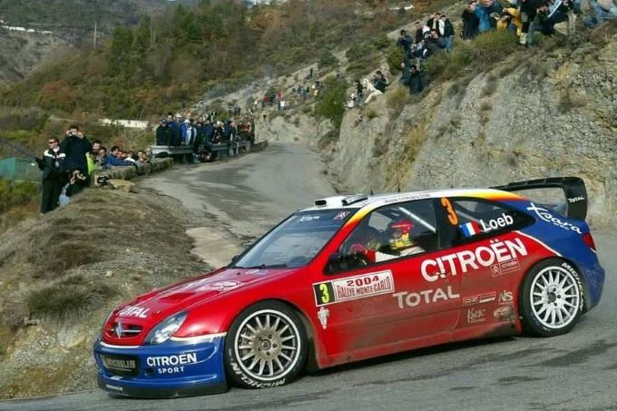 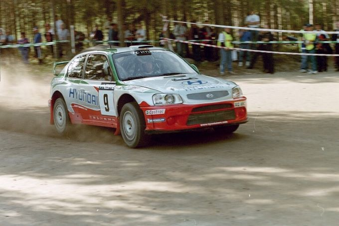
The 2017 regulations brought a more powerful, aggressive generation of World Rally Cars, with improved aerodynamics and electronically controlled differentials. Sébastien Ogier and M-Sport Ford won the first drivers’ and manufacturers’ titles under the new rules; Ott Tänak took his first drivers’ title with Toyota in 2019, before Ogier won again in 2020 and 2021 with Toyota. The 2021 season marked the end of this era, ahead of hybrid Rally1 cars in 2022.
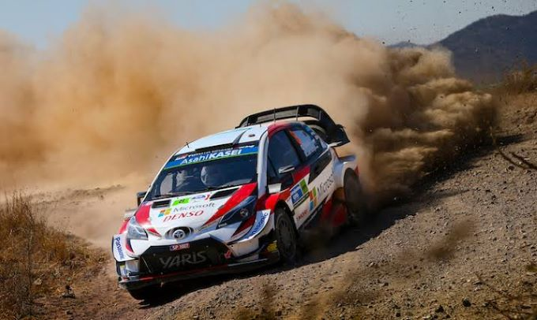 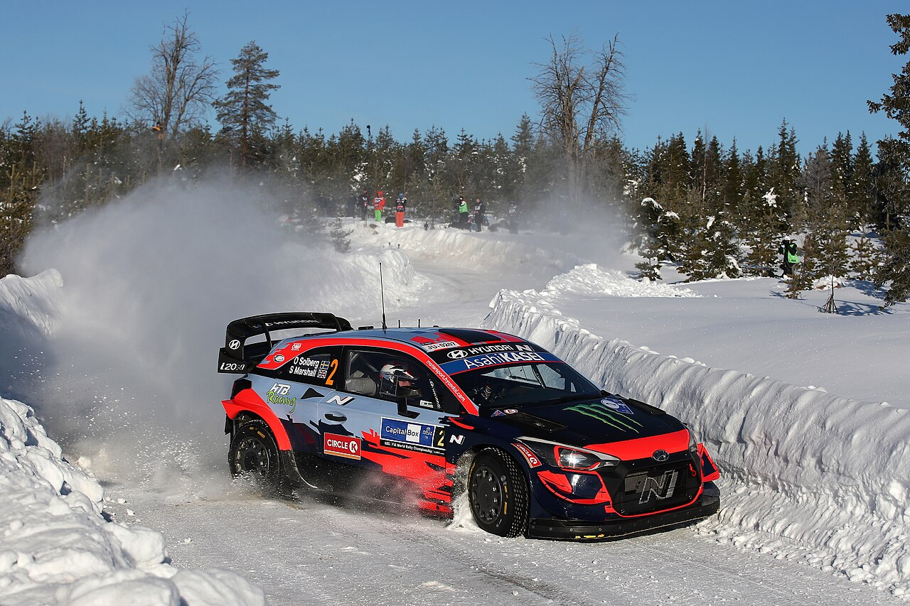 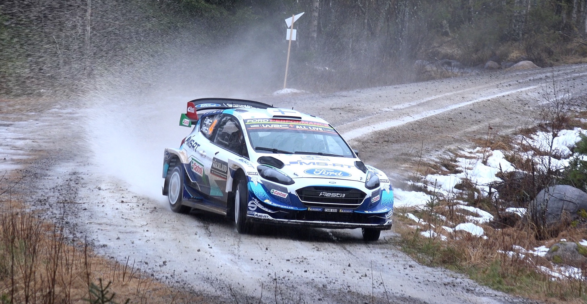